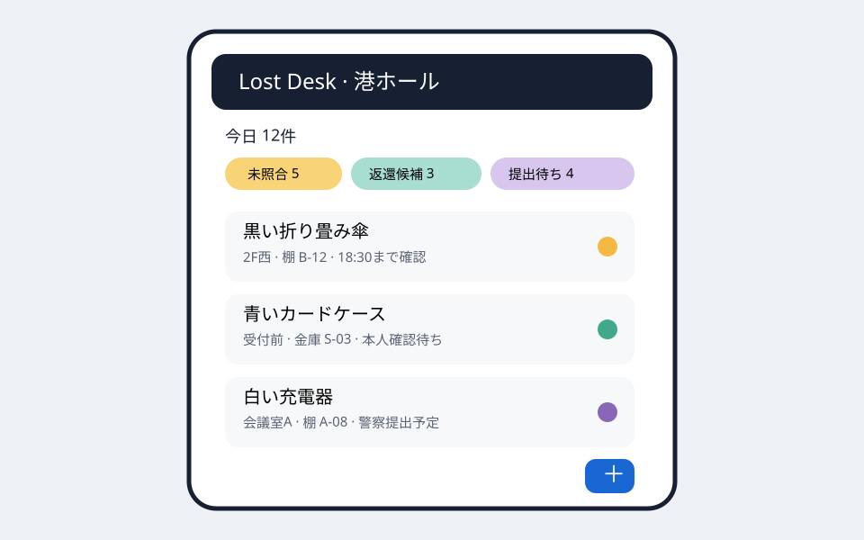
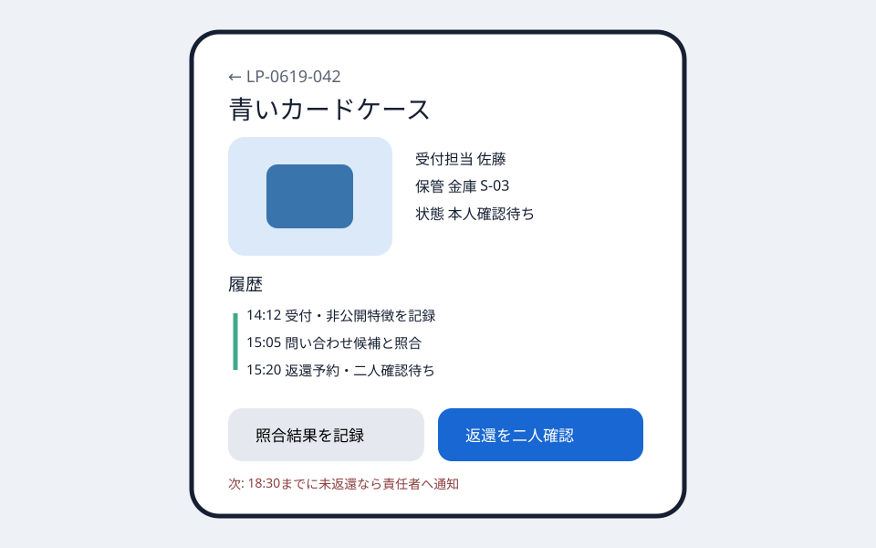

Question Note
小規模会場の遺失物受付と警察提出をつなぐサービス案


全体像
警察庁は、施設内で拾得した物は施設占有者へ交付し、施設側が警察へ提出する流れを示しています。小規模イベントや貸会議室では、受付担当が交代する間に拾得日時、特徴、保管場所、問い合わせ、本人確認、警察提出が紙と口頭に散りがちです。本案は法的判断を代替せず、施設内の受領から返還・提出までを一件単位で閉じます。
切り出す社会課題と既存手段の限界
初年度は月4回以上イベントを開くホール、ライブハウス、展示会運営者に絞ります。
| 現場課題 | 結果 | 既存手段の限界 |
|---|---|---|
| 受付担当が交代する | 保管場所や対応状況が分からない | 紙台帳は会場間で検索できない |
| 問い合わせ表現がばらばら | 同じ物でも照合できない | チャットは色、傷、日時を構造化しない |
| 返還・提出期限が別管理 | 対応漏れや誤返還が起きる | 表計算は本人確認と監査履歴が弱い |
サービス案と中核ワークフロー
- スタッフが品目、日時、場所、外観、拾得者の権利意思を受付する。
- 公開してよい特徴だけで問い合わせ候補を照合する。
- 返還時は本人しか知り得ない特徴と本人確認方法を二人で確認する。
- 未返還品は会場規程と警察案内に沿って提出し、受領番号を記録する。
専用台帳にする理由は、個人情報を公開検索から分離し、物件の状態遷移、保管棚、担当交代、返還・提出証跡を同時に扱うためです。現金、身分証、危険物などは即時エスカレーションし、施設ごとに警察へ運用確認します。
100万円規模に抑えた市場設定
| 到達可能市場 | 近隣の会場・イベント運営者60組織へ直接提案 | 一人で導入支援できる範囲 |
|---|---|---|
| 月額 | 20組織 × 4,000円 × 12か月 | 960,000円 |
| 導入支援 | 6組織 × 10,000円 | 60,000円 |
| 初年度売上 | 合計 | 1,020,000円 |
AWSシステム要件と支出
東京リージョン、1 USD = 150円、無料枠・クレジット除外、20組織、250 MAU、年間6,000件の概算です。実装前にAWS Pricing Calculatorで再計算します。
| AWSリソース | 用途 | 想定使用量 | 月額 | 年額 |
|---|---|---|---|---|
| Amazon S3 | Web画面、拾得物写真、提出控え | 15GB | 500円 | 6,000円 |
| Amazon CloudFront | 認証済み画面と画像配信 | 月20GB | 700円 | 8,400円 |
| Amazon Cognito | 受付・責任者の認証と組織権限 | 250 MAU | 300円 | 3,600円 |
| Amazon API Gateway | 受付、照合、返還、提出API | 月6万件 | 300円 | 3,600円 |
| AWS Lambda | 候補照合、期限通知、監査帳票 | 月7万実行 | 400円 | 4,800円 |
| Amazon DynamoDB | 組織、会場、拾得物ID、日時・場所、非公開特徴、拾得者意思、保管棚、担当、問い合わせ、本人確認、返還・警察提出状態、受領番号、監査履歴 | 3GB、月15万読書き | 900円 | 10,800円 |
| Amazon SES | 担当交代、期限、返還予約の通知 | 月2,000通 | 200円 | 2,400円 |
| Amazon CloudWatch | 認証、照合、通知失敗の監視 | ログ2GB、6アラーム | 700円 | 8,400円 |
| AWS Backup | 台帳と監査履歴の日次復旧 | 10GB | 450円 | 5,400円 |
| AWS Budgets | 画像・通知費の上限通知 | 2予算 | 150円 | 1,800円 |
| Amazon Route 53 | 会場別サブドメインのDNS | 1ゾーン | 100円 | 1,200円 |
| AWS合計 | 小規模時の予算上限 | 4,700円 | 56,400円 | |
AIを使った開発見積もり
| 要件整理 | 受付項目、権限、状態遷移の初稿 | 2週 |
|---|---|---|
| 試作 | 一覧、写真、照合、引き継ぎ | 2週 |
| 本実装 | 認証、監査、帳票、通知、テスト補助 | 4週 |
| 検証 | 誤返還防止と警察提出シナリオ | 3週 |
AIなしの約16週を約11週へ短縮します。遺失物法の解釈、本人確認、保存期間、現金等の扱いは人と所轄警察が確認します。
売上・支出・利益
売上 - 支出 = 利益
| 売上 | 1,020,000円 | 月額 + 導入支援 |
|---|---|---|
| 支出 | 196,400円 | AWS 56,400円、法律・規程確認80,000円、営業・ラベル資材60,000円 |
| 利益 | 823,600円 | 事業主の人件費・税引前 |
必要人数と人材要件
開発・導入1名 + 法務と現場運用の単発レビューです。実行者がWeb開発、会場設定、問い合わせ対応を担い、規程と本人確認手順は専門家および所轄警察へ確認します。
リスクと最初の検証
- 検索画面に非公開特徴や個人情報を出さず、照合担当だけが参照する。
- 誤返還を避けるため、二項目照合と二人確認を標準にする。
- システム期限を法的期限と断定せず、施設規程と所轄案内を優先する。
3会場・12イベント・8週間で、登録時間、担当交代時の探索時間、誤照合、返還・提出完了率、月額支払い意思を測ります。